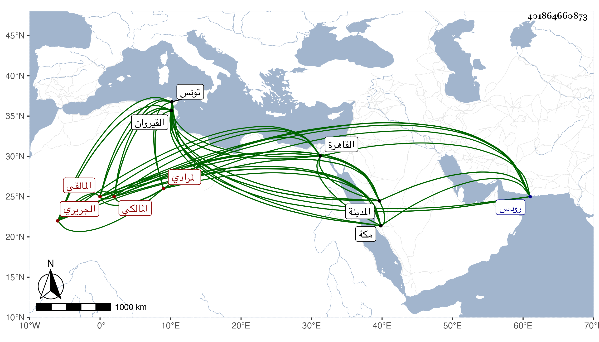

0902Sakhawi.DawLamic.ITO20230111-ara1.EIS1600.401864660873
Biography ID: 401864660873
أحمد بن سعيد بن محمد بن مسعود الجريري بفتح الجيم وبمهملتين نسبة لقرية من قرى القيروان تنسب لشخص يقال له ابن جرير المرادي المالقي المالكي . ولد في سنة عشر وثمانمائة بالقرية المذكورة وقرأ بها القرآن لنافع ثم انتقل إلى القيروان فأخذ الفقه عن عمر المسراتي ثم إلى تونس فأخذه عن أبوي القسم بن أحمد البرزالي ولازمه أربعا وعشرين سنة فأكثر حتى كان انتفاعه به وابن عبدوس وعمر بن محمد القلشاني بكسر القاف وسكون ثم معجمة ثم نون وعنه أخذ الأصلين والعربية والمعاني والبيان والمنطق ومحمد الطبلبي بموحدتين الأولى مضمومة بينهما لام ساكنة محمد بن مرزوق وأبي القسم العقباني والعربية أيضا عن حسن العلويني وأحمد الشماع ، والفرائض والحساب عن يوسف التونسي ، وسمع على البرزالي وابن مرزوق والعقباني والشماع في آخرين ثم قصد التجرد وظهر له أن النية في الاشتغال والأشغال فاسدة فارتحل للحج في سنة أربع وأربعين وسافر في البحر في أواخر ربيع الآخر منها في مركب لبعض الفرنج فخرج عليهم مركب للجنويين فأصيب مركبهم منه فقصدوا رودس وأقاموا بها نحو عشرين يوما حتى أصلحوها ثم قدم القاهرة وسافر منها في البحر أيضا إلى مكة فقدمها في رمضان منها فحج وزار صحبة المركب وقطن المدينة وصاهر قاضيها فتح الدين بن صالح وبقي على طريق السياحة مدة ثم سئل في الأشغال فامتنع ثم استخار الله فانشرح له صدره وتصدى لإقراء الفقه والعربية وكان محمد بن نافع الآتي وغيره يمتنعون من الإقراء معه وربما حضر بعضهم عنده مع الصلاح والعبادة حتى أنني رأيت أهل المدينة فيه كلمة إجماع ومع ذلك فقال البقاعي أنه لقيه في جمادى الثانية سنة تسع وأربعين وكتب عنه من نظمه :
| يا سيدي يا رسول الله يا سندي | يا عمدتي يا رجائي منتهى أملي |
| أنته الوجيه الذي ترجى شفاعته | كن لي شفيعا غدا يا خاتم الرسل |
ومن إنشاده لأبي يحيى بن عقيبة القفصي مما أنشد له :
| أزف الحمام وأنت ساه معرض | عن كل خطب فما لئيم يعرض |
| يا ويح من ركب البطالة واعتدى | يشتد في طلب الخصام وينهض |
وبحث معه وأنه رآه شديد الإعجاب بنفسه مع إظهار الصلاح والمبالغة في التبرئ من الدنيا وبالغ في الحط منه ووصفه بالعجب والكبر والحسد قال وأهل المدينة مفتونون به ، وهجاه بقوله :
| وثعبان بدا في زي حبل | لأجعله جريرا للبعير |
| يخادع كالجريري كل كسر | فقلت لحاك ربي من جريري |
قلت ولم يلبث أن مات في صبيحة يوم الخميس سلخ رمضان سنة تسع وأربعين وكان له مشهد عظيم لم يتخلف عنه أحد من أهل السنة رحمه الله وإيانا وهو والد زوجة البدر حسن بن زين الدين وقد استفدت بعض شيوخه من إجازته لعبد السلام الأول ابن الشيخ ناصر الدين الكازروني حين عرض عليه بعض محافيظه .
